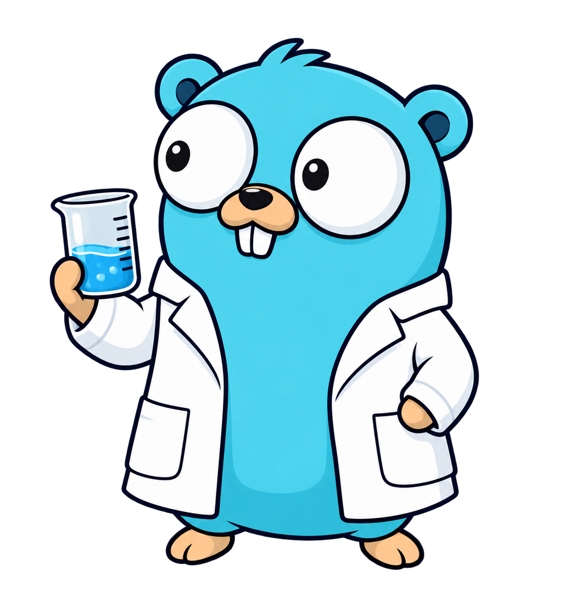

Follow the source
Browse files and changesets. Find your way through named branches, bookmarks, and tags.
Meet Hgs
A home for your repositories and the people who work on them. Bring your Mercurial workflow together in one place.
Your server. Your projects. Familiar hg commands.

Hgs is a self-hosted Mercurial service for browsing source, following changesets, and discussing work. Keep the distributed version control you know, with a shared home for your projects.
Browse files and changesets. Find your way through named branches, bookmarks, and tags.
Use issues and pull requests to discuss changes in the context of the repository.
Organize repositories and collaborators on an instance you administer.
At home in your terminal
hg clone.Your working copy stays a Mercurial repository. Browse on the web, then return to the commands you already use.
$ hg clone https://hgs.example/lab/field-notesExample command · hgs.example is a placeholder address.
Observations, experiments, and the occasional useful discovery.
A shared collection of everyday development tools.
Notes for working together, kept alongside the work.